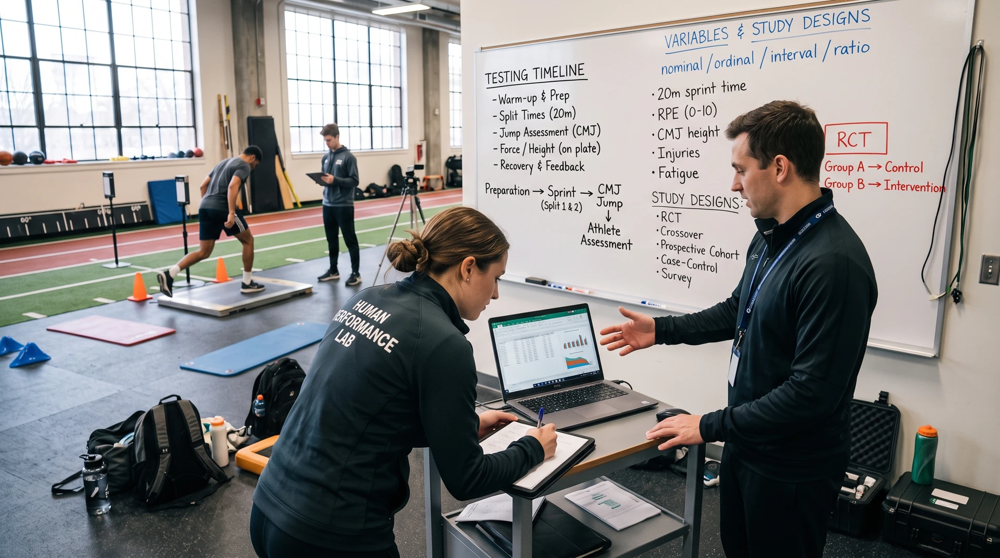

What kind of variable you measured decides which summaries and analyses make sense, and the question you ask decides which design can answer it. Sort the sport variables on the left, then match each research question with a design.
Choose the level of measurement for each. Feedback appears as soon as you choose.
Which design answers each question best?
Match the design to the question. Randomised trials support intervention comparisons; cohorts establish time order; case-control studies efficiently study rare outcomes; cross-sectional studies estimate prevalence. These are not a universal ranking of study quality.